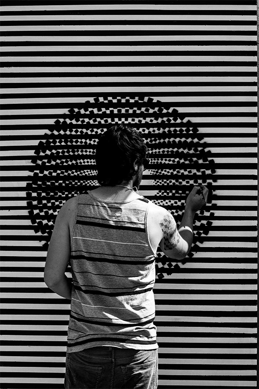

Contacto

Desde pequeño siempre me ha gustado investigar,y crear cosas, Creo que la investigación hace que se desarrolle más la creatividad , tomándolo como la mayor herramienta del diseño ya que sin una buena investigación no se puede llegar a resolver el problema que uno se plantea para diseñar.
Estudié diseño de mobiliario y producto para entender la tridimensión del objeto, He trabajado desarrollando nuevos productos y sus procesos de producción, desde bolsas, productos promocionales , arquitectura de interiores, instalaciones y retail, especializandome en modelos 3d , renders, y su producción de forma digital.
Me dedique al arte para explorar mi interior, mi cabeza y darle otro giro a mi creatividad de forma estética, en múltiples exposiciones colectivas e individuales en México e internacional.Entre a una maestría de Experiencia digitales (UI/UX) para entender al máximo a los usuarios con las nuevas tecnologías, nuevos métodos y procesos de investigación para poder desarrollar nuevos productos enfocados 100% al usuario, y así entregar un diseño que aporte el mayor valor al usuario y que se vincule con la estética de el.
Y ahora espero a ver que me depara, espero que trabajar contigo